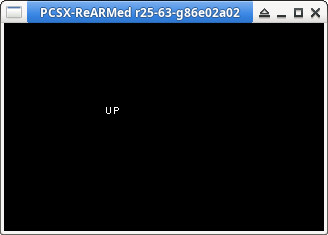

參考資訊：
https://psx.arthus.net/starting.html
https://github.com/ABelliqueux/nolibgs_hello_worlds#installation
main.c
#include <sys/types.h>
#include <stdio.h>
#include <libgte.h>
#include <libetc.h>
#include <libgpu.h>
int main(int argc, char *argv[])
{
const int w = 320;
const int h = 240;
int r = 0;
u_long ot = 0;
TILE t = { 0 };
DISPENV disp = { 0 };
DRAWENV draw = { 0 };
ResetGraph(0);
SetDefDispEnv(&disp, 0, 0, w, h);
SetDefDrawEnv(&draw, 0, 0, w, h);
SetDispMask(1);
setRGB0(&draw, 0, 0, 0);
draw.isbg = 1;
PutDispEnv(&disp);
PutDrawEnv(&draw);
FntLoad(640, 0);
FntOpen(100, 100, w, h, 0, 255);
PadInit(0);
while (1) {
r = PadRead(0);
if (r) {
setTile(&t);
setXY0(&t, 0, 0);
setWH(&t, w, h);
setRGB0(&t, 0, 0, 0);
addPrim(&ot, &t);
}
if (r & PADLup) FntPrint("UP");
if (r & PADLdown) FntPrint("DOWN");
if (r & PADLleft) FntPrint("LEFT");
if (r & PADLright) FntPrint("RIGHT");
if (r & PADRright) FntPrint("A");
if (r & PADRdown) FntPrint("B");
if (r & PADRup) FntPrint("X");
if (r & PADRleft) FntPrint("Y");
if (r & PADL1) FntPrint("L1");
if (r & PADL2) FntPrint("L2");
if (r & PADR1) FntPrint("R1");
if (r & PADR2) FntPrint("R2");
if (r & PADstart) FntPrint("START");
if (r & PADselect) FntPrint("SELECT");
FntFlush(-1);
DrawSync(0);
VSync(0);
PutDispEnv(&disp);
PutDrawEnv(&draw);
DrawOTag(&ot);
}
return 0;
}
